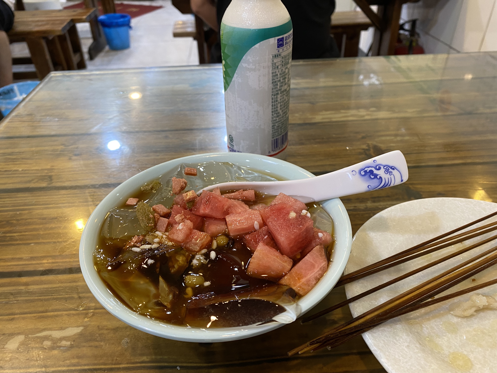
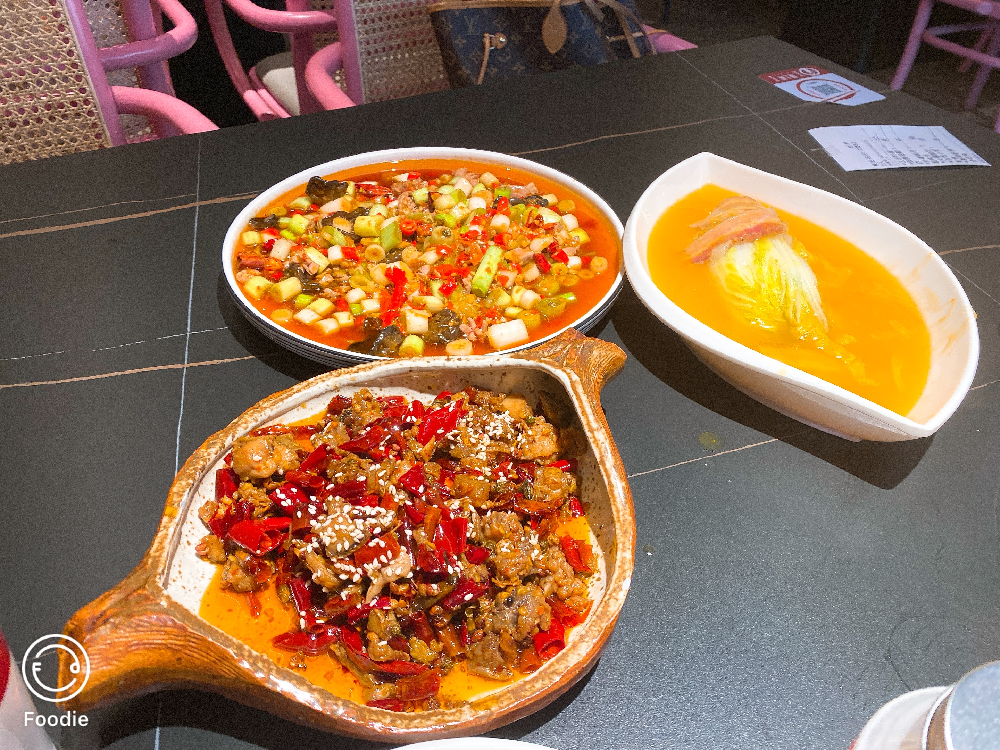

Food
The images above are from two restrunt locates around Sichuan University. The first ressruant is famous for its Bo Bo Chicken - The Bo Bo Chicken has crisp skin and tender meat, tasting spicy, fresh and fragrant, moderately sweet and salty. The the food in imgae is another famous Sichuan Food Ice Powder, which is Jelly with red sugar with topping of watermelon, sesame, raisin. It used to be eat deal with the spicy taste of other Sichuan Food.
The food in another picture is Zigong food, a city in Sichuang province. The front dish is Cold rabbit, which is much spicy than I thought that I fail to finish it even with a large bottle of yoghourt. The dish at upper left is pig waist with scallion. To compensate these two spicy dishes, the third dish ordered, on the right, is braised cabbage soup. What worth denoted is that the waitress who noticed that these food were too spicy for us and chatted with us about how hard for non-native people to enjoy these spicy.
